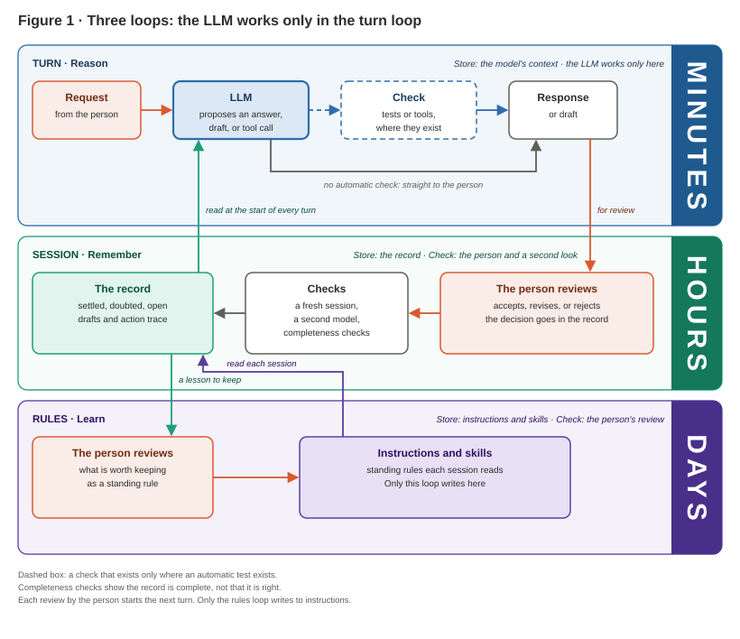

Graepel is right: serious knowledge work needs more than a chat window
Thore Graepel says LLMs don’t reason. This piece agrees, and asks what follows for anyone using them on serious work.
A response to his MIT Technology Review op-ed of 2 October 2026. Every quotation was checked against the op-ed, and every figure cited was traced to its primary source.
The short version
The body of this piece is written in the third person and authored by Claude with human guidance. Blocks headed Bursera’s Take are written by Hugh McCutchen, in his own voice (with some edits from Claude). Blocks headed Graepel are direct quotations from his op-ed. The block headed Claude Says is Claude’s own closing view, written in the third person; there, “the Model” means Claude.
Thore Graepel’s headline states that large language models (LLMs), the models behind AI chat tools, do not reason [S1]. This piece does not dispute that.
Graepel · Sophisticated prediction, not reasoning“A large language model picks the next token, over and over. That amounts to system 1 in action—fast, associative, and surprisingly good pattern completion across almost every subject people write about.”
— Thore Graepel, MIT Technology Review [S1]
System 1 is the psychologist Daniel Kahneman’s term for fast, intuitive thinking; system 2 is slow and checks its own work [S4]. What an LLM predicts depends on the patterns it learned across billions of pages of human writing and on the context it is given in the conversation. That context is where a prediction becomes useful or sensible. When a model explains its reasoning, the explanation is another prediction: a plausible account of how an answer like this would be reached, produced by the same process that produced the answer. It is not a replay of the steps taken. People do much the same when asked afterward to explain a decision. They give a sensible account, though they rarely followed a method laid out in advance. Anthropic planted hints in prompts and checked whether the model’s written reasoning admitted using them; Claude 3.7 Sonnet mentioned the hint 25% of the time [S5]. Graepel concedes that step-by-step prompting improves results in mathematics and code. His point is that it adds no separate reasoning mechanism [S1].
Graepel · Bigger isn't reasoning“I do not think we reach trustworthy machine intelligence by making system 1 bigger.”
— Thore Graepel, MIT Technology Review [S1]
The practical conclusion: no matter how good the model is, serious knowledge work needs more than a chat window on its own. It needs the model inside a larger system that keeps a record, checks the work, and is led by a person.
Graepel’s own answer is a different design. It has no single established name; the builders of such systems describe each one differently, and Graepel says his direction “draws on AlphaGo’s architecture” [S1]. A plain description is propose-and-verify: a model proposes each step, an independent part of the system tests it against evidence, and the system keeps an explicit record of what is settled, what is doubted, and what is still open [S1]. Where an automatic evaluator can score each answer, systems that pair a model with an automatic evaluator have produced new results in mathematics and computer science, such as DeepMind’s FunSearch and AlphaEvolve [S2, S3]. One AlphaEvolve result is a scheduling rule that Google reports recovers, on average, 0.7% of its worldwide compute. Every candidate rule could be scored automatically, which is why the method fits [S3]. Even there, people frame the problem: DeepMind’s AlphaProof had its competition problems “manually translated” into formal mathematical language [S10].
Most business questions have no automatic evaluator. There, the model should not be used on its own. When done well, it runs inside a framework: instructions and sources the model reads, tools it can use, and a record kept outside the chat. The framework stores what the model needs and puts it in front of the model each time. A person sets the goal, leads the work, and is accountable for the result. The check that an automatic evaluator would make falls to the person, the record, and a fresh session or a different model. In this piece, the system means all three together: the model, the framework, and the person.
| Question | The LLM on its own | Propose-and-verify (Graepel’s direction) | The system: LLM, framework, and person |
|---|---|---|---|
| Does it reason? | No. Each answer is a fast prediction. | Yes, where an evaluator can test each step. | Closer. The record and the person’s review make the work more deliberate, and checks add to that where they exist. |
| Does it remember? | No. Each turn it works only from what it is given in that thread. | Yes, through an explicit record. | Yes. The record outside the model carries decisions and findings from one session to the next. |
| Does it learn? | No. The model does not change to reflect what is learned while it is used. | Mostly; varies by system. Shown mainly in code and mathematics. | Yes, slowly. Corrections are written into standing rules that later sessions read. Following them is not guaranteed. |
1 · The model is one part of a working system
In real work, three parts surround the model:
- Instructions and sources the model reads before it starts: the goal, the rules, and the material to work from.
- Tools it can use, such as web search, running code, and running tests.
- A record kept outside the chat: decisions made, questions still open, and what each check found. The model reads it at the start of each turn. Reviewed results go into it, and a machine-written trace of commands run and checks passed is added automatically. The record is the system’s memory, and it sits outside the model.
A person leads the work. They set the goal, decide what to ask next, and accept, revise, or reject each result. The questions come from the person, and some of them change the goal. Each request starts one turn. A turn produces a response or a draft, the person reviews it, and that review decides what goes into the record and starts the next turn.
Figure 1 shows the system as three loops at different speeds, one for each question in the table above: reasoning within a turn, remembering across a session, and learning through standing rules.

Because the record is written as the work goes, through updates and changes in direction, it shows what failed and what changed. What can be inspected is the record, not any single answer: what happened, what decisions the human leader made, and what methods and checks were used.
Graepel names three things the model lacks (rows 1 to 3 below) and asks for two more (rows 4 and 5): an independent test of each step, and learning from what was checked [S1]. The system described here offers a partial substitute for each: strongest on the record, weakest on independent checking.
Graepel · No record, no reasoning“There is no open ledger that lays out the hypotheses a model is considering, the confidence it has in various explanations, the evidence it’s weighing, and the unresolved questions it’s holding onto—all things that should be systematically revised as new information arrives.”
— Thore Graepel, MIT Technology Review [S1]
Graepel · An independent check“…an independent part of the system must evaluate each move by how much it actually resolves uncertainty, updating beliefs only when the change is backed by evidence.”
— Thore Graepel, MIT Technology Review [S1]
| What Graepel asks for, in plain terms | Where the system keeps it | Honest limit |
|---|---|---|
| A record | The record outside the chat: decisions, open questions, evidence | A document, not a formal belief state, and it can go stale without warning |
| Knowledge kept apart from how it is used | Sources kept in files the model reads, so anyone can see what it worked from | The model is still predicting from context, but the context is better controlled and managed |
| An honest account of how an answer was reached, not one put together afterward | The machine-written trace: commands run, tests passed or failed, files changed, checks passed | Only the trace is reliable. The model’s own notes about why are the same after-the-fact explanation Graepel criticizes |
| An independent check | Automated checks where they exist (a coding agent running tests); a second model on some work; otherwise the person | The weakest row for knowledge work. Where no automatic test exists, checks confirm the record is complete, not that it is right, and the person rarely checks every step |
| Learning from checked past experience | Standing rules the person reviews, which later sessions read | An analogy: the model itself does not change. Rules are read, not guaranteed followed, and the system is only as good as the person who makes time to manage and evolve them |
2 · Knowledge work gains unevenly from LLMs
Producing a possible answer is now cheap. Refining it into something worth using takes time and human leadership. In code and mathematics, a machine can check the answer or the human can prove whether it works. Most business work has no black and white answer.
Three studies measured AI on ordinary knowledge work:
- Consulting. 758 BCG consultants used GPT-4 on realistic consulting tasks. On tasks the AI handled well, they completed 12.2% more tasks, 25.1% faster, at more than 40% higher quality. On one task chosen to be outside what the AI could do, consultants using AI were 19 percentage points less likely to reach a correct answer than consultants without it [S6].
- Professional writing. 453 college-educated professionals did writing tasks from their own occupations. With ChatGPT, time fell 40% and quality rose 18% [S7].
- Customer support. At one company, an AI assistant raised issues resolved per hour by 14% on average across 5,179 agents, and by 34% for novice and low-skilled agents [S8].
These studies measure gains. Only the consulting study tested work outside what the AI does well, and on that task consultants using AI did worse than those without it. The study’s title names the problem: a “jagged technological frontier,” where AI is strong on some tasks and weak on others that look similarly difficult [S6]. Knowing which is which takes experience, and the gap is hard to define in advance or to recognize in the moment. Nothing in the chat response directly signals the problem, which is why the check has to sit outside the model: in the record, in a second look, and in the person leading. Knowledge workers using these tools need to build that judgment.
3 · Where knowledge work often fumbles
Human-led knowledge work has several limits:
- A simple question against a murky topic. Some topics, like how a programming language works, are well documented, clear-cut, and testable. Others, such as whether a specific policy meets a security standard, are nuanced. Some are still being argued over. Asking an LLM whether something like AI data centers is good or bad can surface a lot of contradictory material.
- Poorly defined context. Even the most straightforward black and white question can give an unhelpful answer with poor context. Asking about an event that just happened, when a similar event happened a year ago, tends to pull first from the model’s training (the earlier event). The answer isn’t “wrong”, but it isn’t what you wanted.
- A model judging the ideas it produced. When the model checks its own work, the check is weak. In a study with more than 100 researchers, AI-generated research ideas were rated more novel than experts’ ideas but slightly less feasible, and the AI was an unreliable judge of the ideas it generated [S9]. The study tested the model judging its own ideas; a fresh session or a different model as the checker is this piece’s proposal, not a finding.
- People screen out odd ideas. Like the models, people bring their own lens and context. A person reviewing output tends to keep what looks sensible to them, based on what they know. An unusual idea that would have worked, or even worked best, can be cut out by the human leader.
- It is easy to be lazy. Models take shortcuts and miss instructions. The people leading the work can be lazy too: it is easy to take an early draft or response and run with it. Output that will be relied on needs a close read, and output headed to a wider audience needs more than one set of human eyes.
4 · Best practices for working with LLM systems
- Maintain the record outside the chat. Decisions, sources, and open questions go in a persistent document, not in a conversation that scrolls away.
- What happened is more important than why. “The test failed” is a fact. “It failed because of X” is a guess until it is checked.
- Results are checked. Numbers are recalculated, sources are opened, code is run.
- A second review comes from outside the work. A fresh session or a different model checks the work before anyone relies on it.
- A person makes the decision. The model proposes. A person reviews, accepts, revises, or rejects, and that decision goes into the record.
- Stay curious and be willing to change direction. Ask what a term means, what the evidence actually says, whether a sentence is true. Bring in outside reviewers early. Drop the position you started with when the work shows it is wrong, and let the record show why.
- Transparency. The work is described honestly: how it was done, how rigorous it was, and who stands behind it.
Final take
Sources
| # | Source | Supports |
|---|---|---|
| S1 | Graepel, T. “Don’t be fooled—LLMs don’t reason.” MIT Technology Review, 2 Oct 2026. https://www.technologyreview.com/2026/10/02/1145639/dont-be-fooled-llms-dont-reason/ | The argument under response and the propose-and-verify design (paraphrased) |
| S2 | Romera-Paredes, B. et al. “Mathematical discoveries from program search with large language models.” Nature, 2023. https://doi.org/10.1038/s41586-023-06924-6 | FunSearch: an LLM paired with an automated evaluator; works best where an efficient evaluator exists |
| S3 | Google DeepMind, “AlphaEvolve,” 14 May 2025. https://deepmind.google/blog/alphaevolve-a-gemini-powered-coding-agent-for-designing-advanced-algorithms/ | Gemini models paired with automated evaluators; suited to domains where progress can be measured and automatically verified; the data-center scheduling result (0.7% of worldwide compute) |
| S4 | Kahneman, D. Thinking, Fast and Slow. Farrar, Straus and Giroux, 2011. | System 1 and System 2 |
| S5 | Anthropic, “Reasoning models don’t always say what they think,” 2025. https://www.anthropic.com/research/reasoning-models-dont-say-think | 25% hint mentions |
| S6 | Dell’Acqua, F., McFowland III, E., Mollick, E.R., et al. “Navigating the Jagged Technological Frontier.” HBS Working Paper 24-013, 2023. https://papers.ssrn.com/sol3/papers.cfm?abstract_id=4573321 | 758 consultants; +12.2% tasks, 25.1% faster, >40% quality; −19 points on the outside-frontier task |
| S7 | Noy, S., Zhang, W. “Experimental evidence on the productivity effects of generative artificial intelligence.” Science 381 (2023): 187–192. https://doi.org/10.1126/science.adh2586 | 453 professionals; time −40%, quality +18% |
| S8 | Brynjolfsson, E., Li, D., Raymond, L.R. “Generative AI at Work.” NBER Working Paper 31161, 2023. https://www.nber.org/papers/w31161 | 5,179 agents; +14% average, +34% for novices |
| S9 | Si, C., Yang, D., Hashimoto, T. “Can LLMs Generate Novel Research Ideas?” arXiv:2409.04109, 2024. https://arxiv.org/abs/2409.04109 | 100+ NLP researchers; more novel, slightly less feasible; failures of LLM self-evaluation |
| S10 | Google DeepMind, “AI achieves silver-medal standard solving International Mathematical Olympiad problems,” 25 July 2024. https://deepmind.google/discover/blog/ai-solves-imo-problems-at-silver-medal-level/ | AlphaProof: problems manually translated into formal mathematical language |